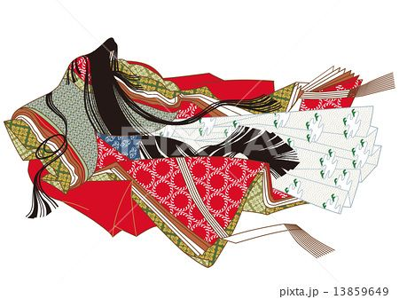

{% extends "base.html" %}
{% block content %}

<div class="daimei">
  <h1>お悩み解決？</h1>
  <h1>人生相談 短歌部！！</h1>
  <h1>詠み人知らず</h1>
  </div>
<div class="seisyounagon">
  

  
  <p1>日本人は、古来より人生や恋の悩みを短歌に詠み、癒され、励まされてきました。ネット社会に疲れた皆さん、古に思いを馳せ、お悩みや相談事を和歌に気軽に読みこんで、ちょっとほっこりしませんか？</p1>
  
</div>

{% endblock %}